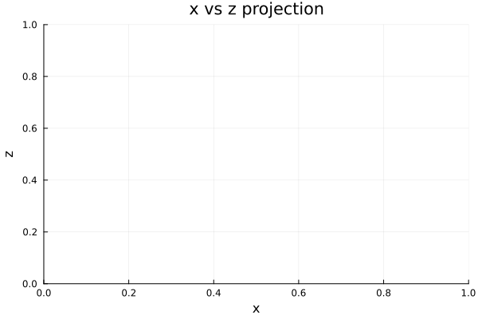
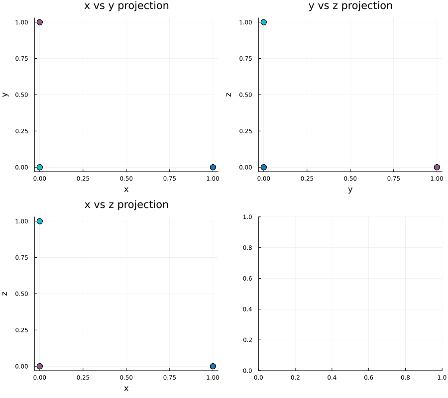

Computing the Nullspace of the Sheaf Laplacian
Introduction
This example demonstrates how to compute and visualize the nullspace of the Laplacian operator for a circular cellular sheaf. We construct a system of 6 agents, each with 3-dimensional stalks, arranged in a cycle topology. The nullspace of the Laplacian contains the global sections–-the solutions that are preserved by the sheaf Laplacian operator. Understanding the structure of this nullspace is fundamental to understanding the harmonic analysis and signal processing on cellular sheaves.
using CellularSheaves
using CliqueTrees.Multifrontal
using LinearAlgebra
using Plots
using SparseArraysBuilding the Sheaf
We start by creating a Euclidean sheaf with 6 vertices (agents), each equipped with a 3-dimensional vector space as its stalk. The stalks represent local data or state at each agent.
n = 6
stalk_dim = 3
F = EuclideanSheaf{Float64}(Int[])
for i in 1:n
add_vertex_stalk!(F, stalk_dim)
endNext, we add edges connecting the agents in a cycle. Each edge is equipped with the identity restriction map, meaning that sections on adjacent agents must have the same value where they overlap.
for i in 1:n
v1 = i
v2 = (i % n) + 1
rm = Matrix{Float64}(I, stalk_dim, stalk_dim)
add_sheaf_edge!(F, v1, v2, rm, rm)
endComputing the Laplacian
The Laplacian of a sheaf is derived from the coboundary map. We first compute the coboundary operator, then form the Laplacian as the Gram matrix X = C^T * C. The Laplacian is a symmetric positive semidefinite matrix whose nullspace corresponds to global sections.
C = sparse(coboundary_map(F))
X = C' * C18×18 SparseArrays.SparseMatrixCSC{Float64, Int64} with 162 stored entries:
⎡⣿⣿⣿⣀⡀⠀⠀⠸⠿⎤
⎢⠛⢻⣿⣿⣧⣤⠀⠀⠀⎥
⎢⠀⠈⠉⣿⣿⣿⣶⡆⠀⎥
⎢⣀⡀⠀⠀⠸⠿⣿⣿⣿⎥
⎣⠛⠃⠀⠀⠀⠀⠛⠛⠛⎦Computing the Nullspace via LDLt Factorization
We use a Chordal LDLt factorization to efficiently compute the nullspace. This factorization decomposes the Laplacian as
\[X = P^T * L * D * L^T * P\]
where L is lower triangular, D is diagonal, and P is a permutation. The nullspace corresponds to the zero entries on the diagonal of D.
M = ldlt!(ChordalLDLt(X), RowMaximum())
L = M.L # lower triangular factor
D = M.D # diagonal factor
P = M.P # permutation18×18 FPermutation{Int64}:
0 0 0 0 0 0 0 0 0 0 0 0 0 0 0 1 0 0
0 0 0 0 0 0 0 0 0 0 0 0 0 0 0 0 1 0
0 0 0 0 0 0 0 0 0 0 0 0 0 0 0 0 0 1
0 0 0 0 0 0 0 0 0 1 0 0 0 0 0 0 0 0
0 0 0 0 0 0 0 0 0 0 1 0 0 0 0 0 0 0
0 0 0 0 0 0 0 0 0 0 0 1 0 0 0 0 0 0
0 0 0 0 0 0 0 0 0 0 0 0 1 0 0 0 0 0
0 0 0 0 0 0 0 0 0 0 0 0 0 1 0 0 0 0
0 0 0 0 0 0 0 0 0 0 0 0 0 0 1 0 0 0
0 0 0 1 0 0 0 0 0 0 0 0 0 0 0 0 0 0
0 0 0 0 1 0 0 0 0 0 0 0 0 0 0 0 0 0
0 0 0 0 0 1 0 0 0 0 0 0 0 0 0 0 0 0
0 1 0 0 0 0 0 0 0 0 0 0 0 0 0 0 0 0
1 0 0 0 0 0 0 0 0 0 0 0 0 0 0 0 0 0
0 0 0 0 0 0 0 0 1 0 0 0 0 0 0 0 0 0
0 0 0 0 0 0 1 0 0 0 0 0 0 0 0 0 0 0
0 0 0 0 0 0 0 1 0 0 0 0 0 0 0 0 0 0
0 0 1 0 0 0 0 0 0 0 0 0 0 0 0 0 0 0Identify the indices where D has (numerically) zero diagonal entries. These correspond to the nullspace directions. We construct a basis for the nullspace by back-solving the factorization.
max_abs_diag = maximum(i -> abs(D[i, i]), 1:size(D, 1); init=0.0)
tol = eps(Float64) * max(1.0, max_abs_diag)
ind = findall(i -> abs(D[i, i]) <= tol, 1:size(D, 1))
U = zeros(size(D, 1), length(ind))
for j in eachindex(ind)
U[ind[j], j] = 1
end
V = P \ (L' \ U)18×3 Matrix{Float64}:
1.0 0.0 0.0
0.0 1.0 0.0
0.0 0.0 1.0
1.0 0.0 0.0
0.0 1.0 0.0
0.0 0.0 1.0
1.0 0.0 0.0
0.0 1.0 0.0
0.0 0.0 1.0
1.0 0.0 0.0
0.0 1.0 0.0
0.0 0.0 1.0
1.0 0.0 0.0
0.0 1.0 0.0
0.0 0.0 1.0
1.0 0.0 0.0
0.0 1.0 0.0
0.0 0.0 1.0Visualizing the Nullspace Basis
Each column of V is a basis vector in the nullspace. We visualize all basis vectors simultaneously using three orthogonal projections (x vs y, y vs z, x vs z) arranged in a grid. Each basis vector is displayed in a distinct color, with agent indices shown as annotated markers.
num_basis_vectors = size(V, 2)
colors = palette(:tab10, num_basis_vectors)
Extract coordinate components for each agent Coordinates are strided in V with period stalk_dim
x_coords = V[1:stalk_dim:end, :] # first row in each stalk_dim-sized block
y_coords = V[2:stalk_dim:end, :] # second row in each stalk_dim-sized block
z_coords = V[3:stalk_dim:end, :] # third row in each stalk_dim-sized block6×3 Matrix{Float64}:
0.0 0.0 1.0
0.0 0.0 1.0
0.0 0.0 1.0
0.0 0.0 1.0
0.0 0.0 1.0
0.0 0.0 1.0Create three projection subplots
p1 = scatter(legend=false, xlabel="x", ylabel="y", title="x vs y projection",
markersize=8, markerstrokewidth=1.5)
p2 = scatter(legend=false, xlabel="y", ylabel="z", title="y vs z projection",
markersize=8, markerstrokewidth=1.5)
p3 = scatter(legend=false, xlabel="x", ylabel="z", title="x vs z projection",
markersize=8, markerstrokewidth=1.5)
Plot each basis vector with color coding
for b in 1:num_basis_vectors
x_vals = x_coords[:, b]
y_vals = y_coords[:, b]
z_vals = z_coords[:, b]
scatter!(p1, x_vals, y_vals, color=colors[b], label="basis $b",
markersize=6, markerstrokewidth=0.5)
scatter!(p2, y_vals, z_vals, color=colors[b], label="basis $b",
markersize=6, markerstrokewidth=0.5)
scatter!(p3, x_vals, z_vals, color=colors[b], label="basis $b",
markersize=6, markerstrokewidth=0.5)
endArrange the three projections in a 2×2 grid layout, leaving the bottom-right cell empty
plot_grid = @layout [a b; c d]
plot(p1, p2, p3, plot(), layout=plot_grid, size=(900, 800))